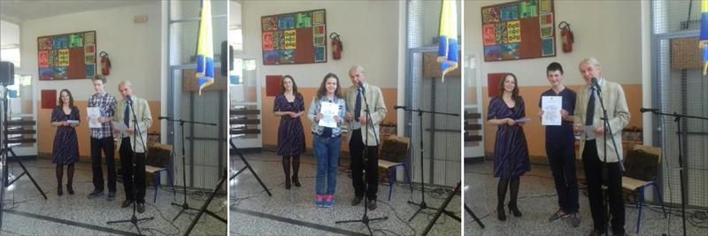
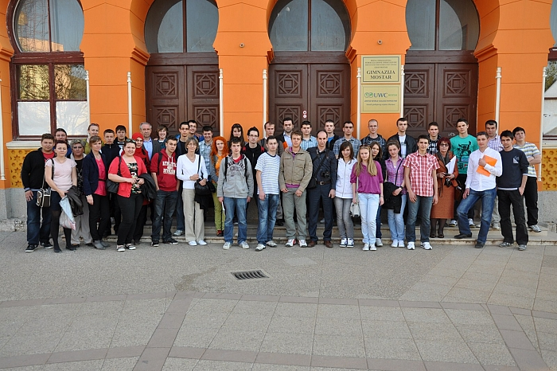
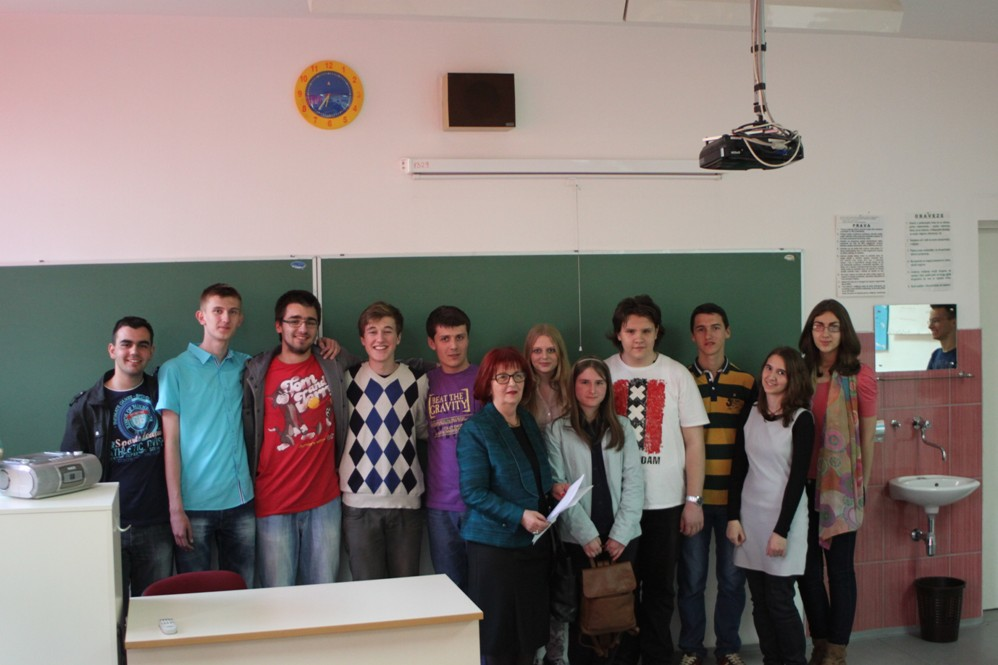
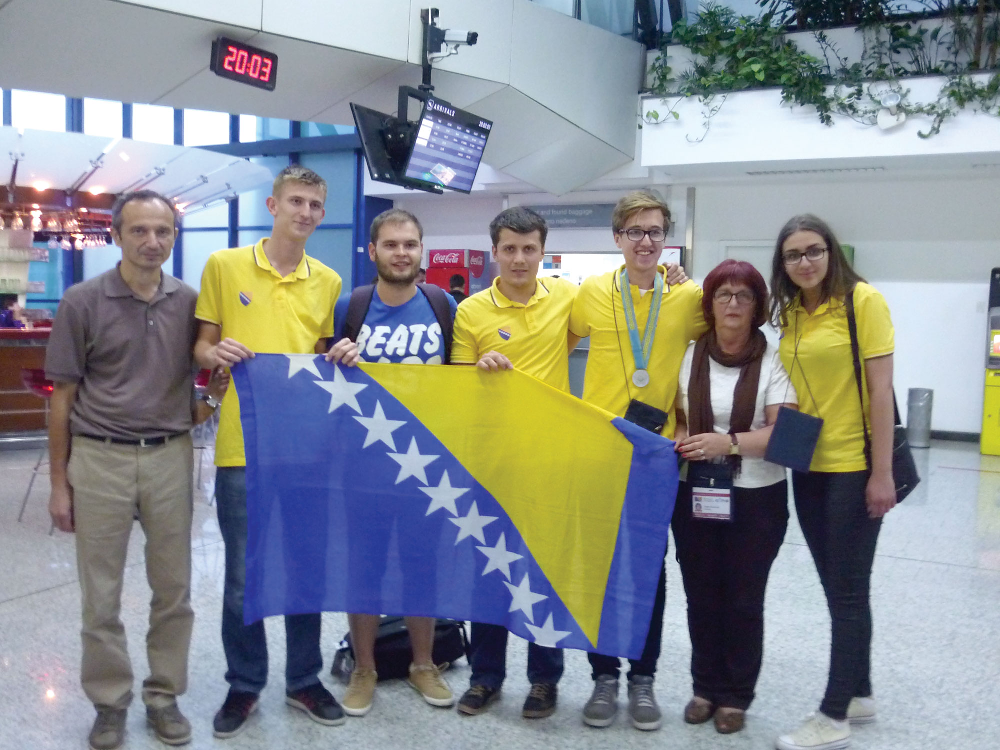

Zadatke s ranijih takmičenja pogledajte ovdje (link je u pripremi).

Kantonalno takmičenje za osnovne škole 2016, Zavidovići

Federalno takmičenje za osnovne škole 2012, International Burch University

Federalno takmičenje za srednje škole 2011, Mostar, UWC koledž

Federalno takmičenje za srednje škole 2013, Kakanj, nagrađeni učesnici
